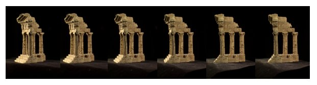
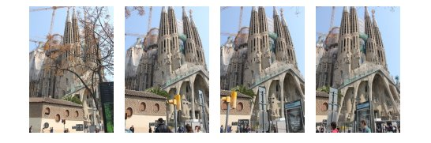
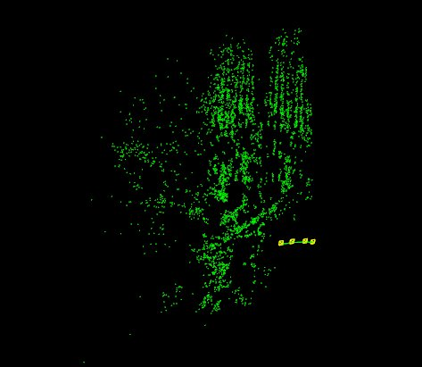

This module contains algorithms to perform 3d reconstruction from 2d images. The core of the module is a light version of Libmv, which is a Library for Multiview Reconstruction (or LMV) divided into different modules (correspondence/numeric/multiview/simple_pipeline) that allow to resolve part of the SfM process.
Before compiling, take a look at the following details in order to give a proper use of the Structure from Motion module. Advice: The module is only available for Linux/GNU systems.
In addition, it depends on some open source libraries:
Required Dependencies
In case you are on Ubuntu you can simply install the required dependencies by typing the following command.
sudo apt-get install libeigen3-dev libgflags-dev libgoogle-glog-dev
Ceres Solver
Start by installing all the dependencies.
# CMake
sudo apt-get install cmake
# google-glog + gflags
sudo apt-get install libgoogle-glog-dev
# BLAS & LAPACK
sudo apt-get install libatlas-base-dev
# Eigen3
sudo apt-get install libeigen3-dev
# SuiteSparse and CXSparse (optional)
# - If you want to build Ceres as a *static* library (the default)
# you can use the SuiteSparse package in the main Ubuntu package
# repository:
sudo apt-get install libsuitesparse-dev
# - However, if you want to build Ceres as a *shared* library, you must
# add the following PPA:
sudo add-apt-repository ppa:bzindovic/suitesparse-bugfix-1319687
sudo apt-get update
sudo apt-get install libsuitesparse-dev
We are now ready to build, test, and install Ceres.
git clone https://ceres-solver.googlesource.com/ceres-solver
cd ceres-solver
mkdir build && cd build
cmake ..
make -j4
make test
sudo make install
trajectory_reconstruction.cpp
This program shows the camera trajectory reconstruction capabilities in the OpenCV Structure From Motion (SFM) module. It loads a file with the tracked 2d points over all the frames which are embedded into a vector of 2d points array, where each inner array represents a different frame. Every frame is composed by a list of 2d points which e.g. the first point in frame 1 is the same point in frame 2. If there is no point in a frame the assigned value will be (-1,-1).
To run this example you can type the following command in the opencv binaries directory specifying the file path in your system and the camera intrinsics (in this case the tracks file was obtained using Blender Motion module).
./example_sfm_trajectory_reconstruction tracks_file.txt 1914 640 360
Finally, the script reconstructs the given set of tracked points and show the result using the OpenCV 3D visualizer (viz). On the image below, it’s shown a screenshot with the result you should obtain running the “desktop_tracks.txt” found inside the samples directory.
scene_reconstruction.cpp
This program shows the multiview scene reconstruction capabilities in the OpenCV Structure From Motion (SFM) module. It calls the recontruction API using the overloaded signature for real images. In this case the script loads a file which provides a list with all the image paths that we want to reconstruct. Internally, this script extract and compute the sparse 2d features using DAISY descriptors which are matched using FlannBasedMatcher to finally build the tracks structure.
To run this example you can type the following command in the opencv binaries directory specifying the file path and the camera intrinsics.
./example_sfm_scene_reconstruction image_paths_file.txt 350 240 360
This sample shows the estimated camera trajectory plus the sparse 3D reconstruction using the the OpenCV 3D visualizer (viz).
On the next pictures, it’s shown a screenshot where you can see the used images as input from the “Temple of the Dioskouroi” [1] and the obtained result after running the reconstruction API.


On the next pictures, it’s shown a screenshot where you can see the used images as input from la Sagrada Familia (BCN) [2] which you can find in the samples directory and the obtained result after running the reconstruction API.


[1] http://vision.middlebury.edu/mview/data
[2] Penate Sanchez, A. and Moreno-Noguer, F. and Andrade Cetto, J. and Fleuret, F. (2014). LETHA: Learning from High Quality Inputs for 3D Pose Estimation in Low Quality Images. Proceedings of the International Conference on 3D vision (3DV). [URL]